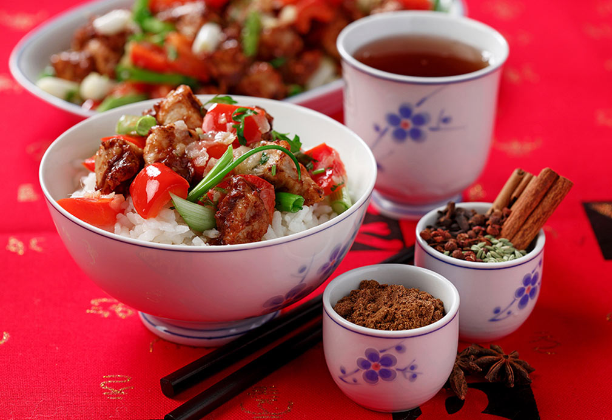

Pork Tenderloin with Five Spice Powder and Peppers

Ingredients
- 2 Tbsp tomato paste
- 2 Tbsp soy sauce
- 1/2 tsp coarse kosher or sea salt
- 2 tsp Chinese five-spice powder
- 1 lb boneless pork tenderloin, cut into 1/2-inch (1-cm) cubes
- 2 Tbsp cornstarch
- 1/4 cup canola oil
- 4 large garlic cloves, finely chopped
- 2 Tbsp finely chopped fresh ginger
- 1 large red bell pepper, stem and seeds discarded, cut into 1/2-inch (1-cm) cubes
- 2 Tbsp finely chopped fresh cilantro leaves and tender stems
- 3 scallions (green tops and white bulbs), sliced into 1-inch (2.5-cm) pieces
Instructions
- In small bowl, stir together tomato paste, soy sauce, salt and five-spice powder.
- In medium bowl, toss pork and cornstarch together.
- Heat wok, large skillet or well-seasoned cast-iron skillet over high heat. Drizzle 2 Tbsp (30 mL) canola oil down sides of wok. When oil forms shimmering pool in bottom of wok, add pork and stir-fry, stirring constantly, until pork turns slightly brown yet still pink in center, 8 to 10 minutes.
- Transfer pork to plate.
- Trickle remaining 2 Tbsp (30 mL) canola oil down sides of wok and quickly stir-fry garlic, ginger and bell pepper until some pepper starts to blister, 5 to 8 minutes.
- Add tomato paste mixture and stir to warm it, about 30 seconds.
- Return pork to wok, including any juices from plate, and stir well to combine ingredients and season meat and vegetable with aromatic sauce. Once pork feels hot to touch, 2 to 4 minutes, stir in cilantro and scallions, and serve immediately.
Cook’s Tips: Most supermarkets and Asian grocery stores carry a five-spice powder blend. If not, make your own by combining:
- 1 1/2 tsp (7 mL) fennel seeds
- 1 1/2 tsp (7 mL) whole cloves
- 1 1/2 tsp (7 mL) Sichuan peppercorns (or 2 tsp/10 mL ground)
- 6 star anise (or 2 tsp/10 mL ground)
- 3 3-inch (7.5-cm) long cinnamon sticks, broken into smaller pieces,
in a spice grinder.
Grind until the texture resembles that of finely ground black pepper. Some of China’s signature dishes, such as Peking duck, barbecued spare ribs and roast pork, are flavored with this classic blend. Other five-spice powders may include cardamom, cassia (instead of cinnamon), ginger, nutmeg and even licorice root.
If doubling or tripling this recipe, cook the dish in two or three separate batches to retain that wok-seared, smoky flavor. If you overcrowd the pan, the ingredients will be stewed as opposed to stir-fried and seared, and the consequence will be blah-tasting fare.